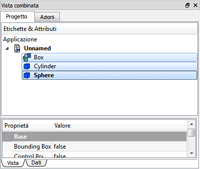

|
| Emplacement du menu |
|---|
| Edition → Dupliquer la Sélection |
| Ateliers |
| tous |
| Raccourci par défaut |
| Voir aussi |
| Copier, |
Description
Dupliquer un ou plusieurs objets sélectionnés dans le document actif.
Il réalise une opération de copie presque similaire.
Vous pouvez sélectionner les fonctions dans un document autre que l'actif, les doublons sont toujours insérés dans le document actif.
Utilisation
- Sélectionnez un ou plusieurs objets. * Ouvrez le menu Édition et cliquez sur Dupliquer la sélection. Dans l'arbre du projet apparaît de nouvelles entrées numérique liées à celles sélectionnées: ce sont des doublons. Pour sélectionner plusieurs objets:
- Utilisez le CTRL en cliquant sur les fonctions que vous souhaitez copier dans le projet ou directement dans la vue,
- Ou dans le menu Édition utiliser la Sélection par Boîte pour sélectionner les objets inclus dans une zone spécifique,
- Ou dans le menu Édition utiliser la touche
 Sélectionner tout pour sélectionner l'ensemble du document.
Sélectionner tout pour sélectionner l'ensemble du document.
Exemple
Les fonctions sélectionnées:
{kind=link}
Fonctions en double:
{kind=link}
Après cette opération, les doubles sont indiscernables de l'original comme ils sont placés dans la même position. Déplacer un objet, ou le cacher pour le voir individuellement
Limitations
Plus
- Voir la page Copie d'objets pour plus de détails sur la duplication des objets.